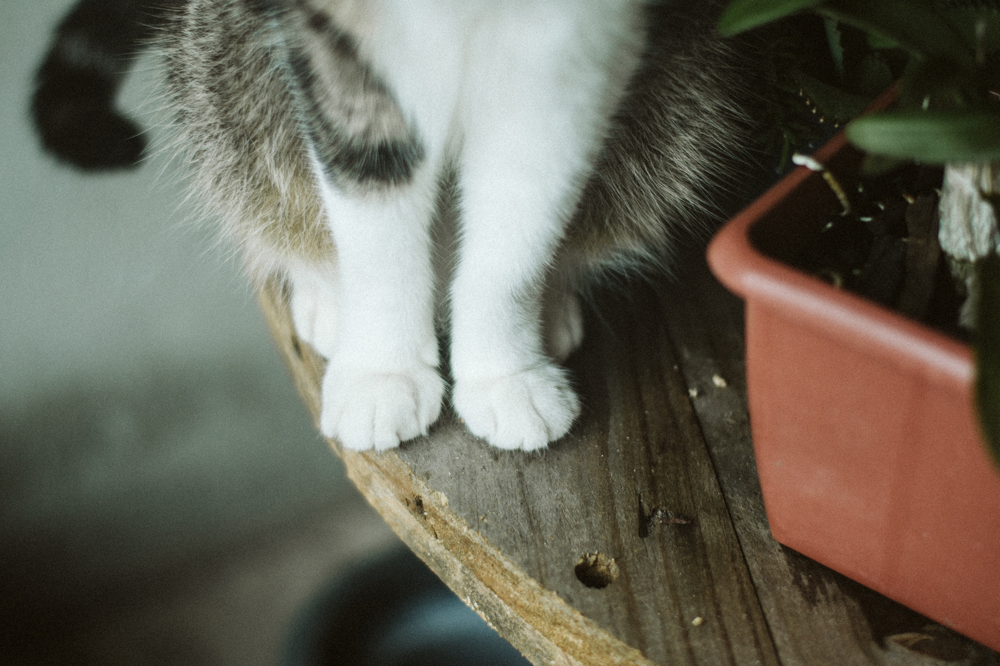
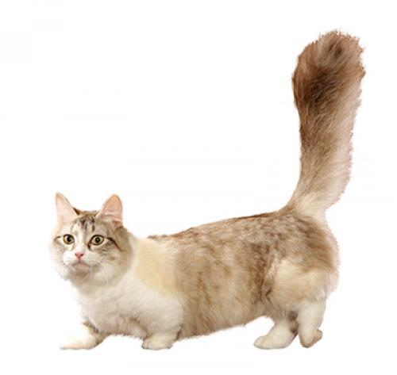
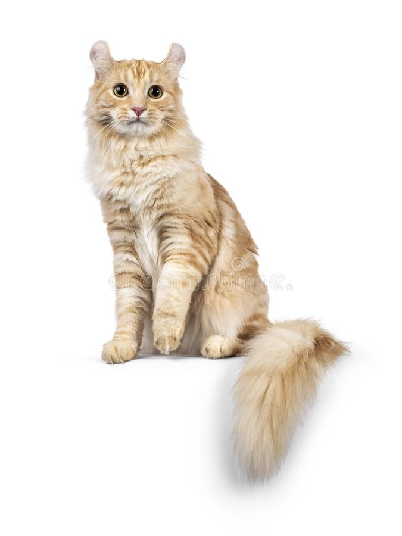
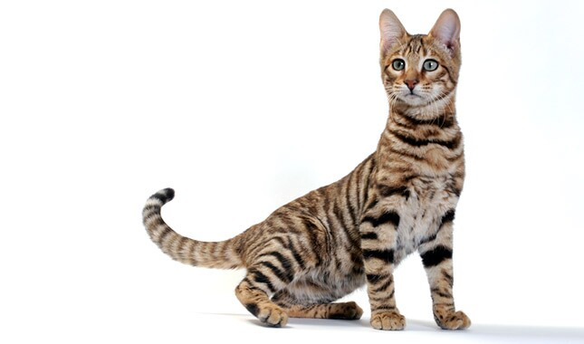

The cat is your best friend
Cats are amazing animals. The embodiment of a unique natural grace, beauty and sophistication. Cute, calm, gentle and at the same time able to release claws, if necessary.
Smart, independent and loyal, these animals easily win hearts: they become wonderful friends, companions for people of all ages.
There are about 200 officially registered cat breeds in the world, and each has a unique beauty. However, among this variety there are those that stand out for their luxurious, bewitching appearance and interesting character.
We will tell you about the 3 most beautiful cat breeds that surprise and delight. About their features and those external features that make these animals unique. And, of course, we will show: what is a top without a photo with the names of the breeds.
There are many breeds of cats, for example:
Munchkin
These domestic cats have a characteristic appearance: a long body and very short legs. Munchkins are also compared to Dachshunds.Not as graceful as other cats, but very cute, funny, charming. They have a full rounded body, a round muzzle, small pointed ears.Munchkin coats can be either short or long. Very soft and fluffy.You can learn more about this parody here.
American curl
A breed with a peculiar and impressive appearance. The body is medium in size, strong and strong. A neat wedge-shaped muzzle, wide round ears, a long nose, large oval eyes - these features give the American Curl a special prettiness. They have luxurious silk long hair - a real soft fur coat. The tail is large and fluffy. American Curls are gentle, playful and energetic.You can learn more about this parody here.
Toyger cats are the spitting image of little tigers. Their short, velvety, dense and shiny coat has characteristic dark stripes on a golden-red background. Toygers have an elongated head shape, a well-defined chin, a long nose and neat ears. The eyes are small, deep-set and striking amber-green. The body is slender, very graceful and muscular. The tail is long and strong. You can learn more about this parody here.
Finally
Each of these breeds has qualities that make its representatives unique. And all are united by such common features as the nobility of appearance, intelligence, innate plasticity, independent character. Whatever the breed, any of the cats is worthy of the title of beauty queen.
If you decide to buy a cat, we are waiting for you on the website in the profile header.
Contacts 0999176532828